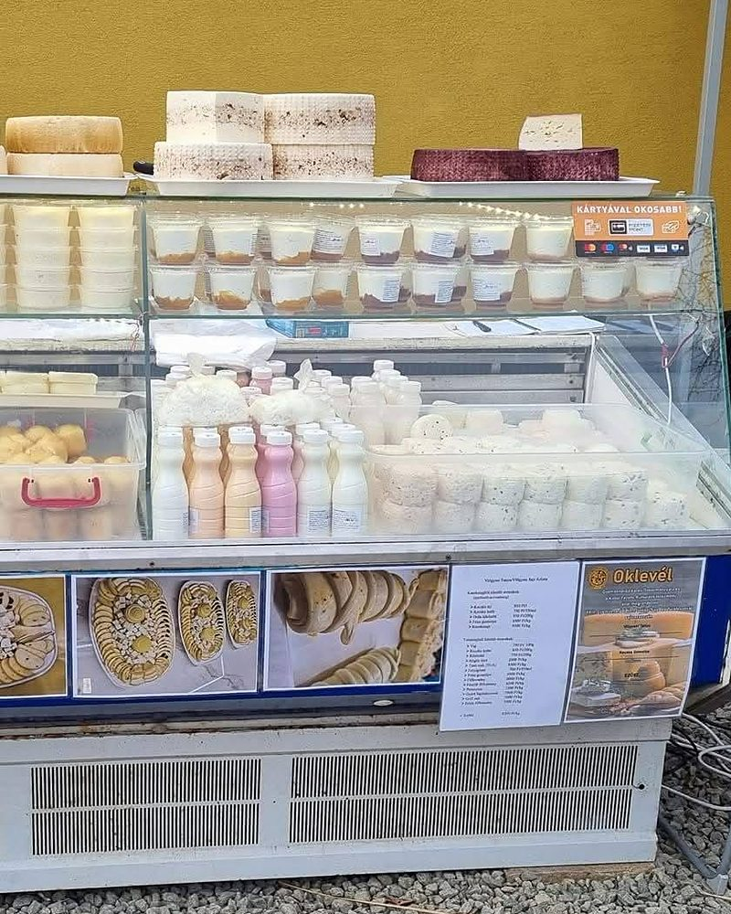
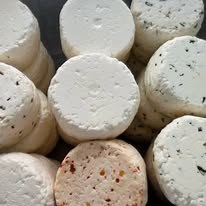
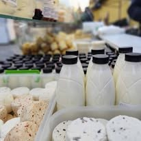
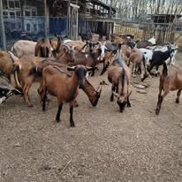
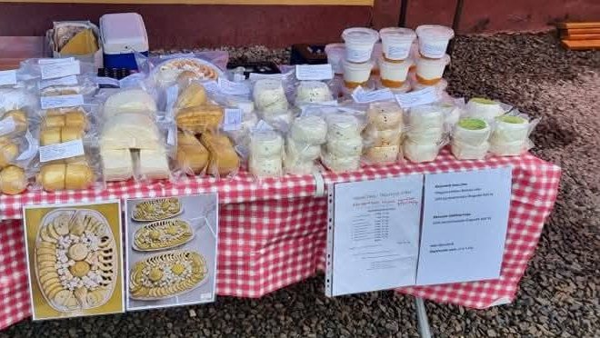

Kézműves sajtok Szentmártonkátáról
Sajt, amit még kézzel készítünk.
A Völgyesi Tanyán tehén- és kecsketejből készülnek a sajtok és a tejtermékek. Nézze meg, mi kapható most, és szóljon, mit tegyünk félre Önnek.

Kézzelnem gyárban
Tehén- és kecsketejebből dolgozunk
Kártyával isfizethet a pultnál
Kínálat
Ami most kapható
A kínálat hétről hétre változik, mert a sajt nem siettethető. Ami épp elfogyott, az is a listán marad, áthúzva.
Sajtok
- Sajtcsiga, natúr4 800 Ft/kg
- Sajtcsiga, füstölt5 200 Ft/kg
- Töltött sajtrolád5 400 Ft/kg
- Érlelt sajt, viaszbanelfogyott
Az érlelt sajtokból kevés készül, érdemes előre szólni.
Friss sajtok és krémek
- Friss sajt, natúr3 600 Ft/kg
- Friss sajt, zöldfűszeres vagy paprikás3 900 Ft/kg
- Sajtkrém, többféle ízben1 200 Ft/doboz
- Túró2 400 Ft/kg
Tej és joghurt
- Joghurt, natúr900 Ft / 0,5 l
- Gyümölcsjoghurt1 000 Ft / 0,5 l
- Tejföl1 200 Ft / 0,5 l
Ha nem találja, amit keres, kérdezzen rá: lehet, hogy épp érlelődik.



Hogyan készül
A tejtől a pultig
-
1
A tej
Minden a tejjel kezdődik. Tehén- és kecsketejből készül a friss sajt, a túró és a joghurt, és ebből érlelődnek a kemény sajtok.
-
2
Kézzel, kis tételekben
Egyszerre annyi sajt készül, amennyit kézzel rendesen meg lehet csinálni. A csigákat és a roládokat is kézzel tekerjük.
-
3
Érlelés
Az érlelt sajtoknak idő kell. Ezért van, hogy valami épp elfogyott, és ezért érdemes előre szólni.
-
4
A pultra
Hűtőpultból áruljuk, piacon és vásáron. Amit előre kér, azt félretesszük Önnek.

Rólunk
A Völgyesi Tanya
Szentmártonkátán készítjük a sajtjainkat és a tejtermékeinket. Piacokon és vásárokon áruljuk őket, a hűtőpultból vagy a kockás abrosz mögül.
Ide jön néhány mondat a tanyáról: mióta készül itt sajt, kik dolgoznak rajta, és melyik piacon, melyik napon találják meg Önöket.
Völgyesi Melinda
Rendelés
Szóljon, és félretesszük
Írja meg, mit és mennyit kér, és hol, mikor venné át. Visszajelzünk, hogy minden megvan-e. Sajttálat is itt kérhet.
Telefon 06 30 604 5424volgyesitanya@gmail.com